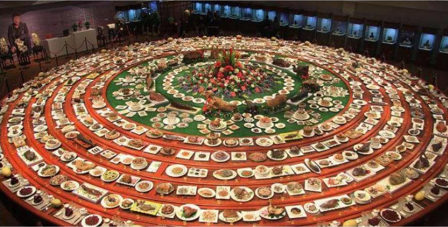

书法
公元353年4月（晋永和九年三月初三日），时任会稽内史的王羲之与友人谢安、孙绰等四十一人在会稽山阴的兰亭雅集，饮酒赋诗。王羲之将这些诗赋辑成一集，并作序一篇，记述流觞曲水一事，并抒写由此而引发的内心感慨。这篇序文就是《兰亭集序》。并挥写了一篇《兰亭集序》。唐太宗对他推崇备至，曾亲撰《晋书》中的《王羲之传论》，推颂为“尽善尽美”。还将临摹本分赐贵戚近臣，并以真迹殉葬。

美食文化
中国菜的选材非常丰富，有一句俗语称：“山中走兽云中燕，陆地牛羊海底鲜。”几乎所有能吃的东西，都可以做为中国菜的食材。但食材的选择关系到菜品的质量。 中国菜中名菜常选择名贵的食材，如燕窝、鱼翅、熊掌、鹿尾、虎骨、猴脑等。其中部分食材取自保护动物，所以某些名菜因取材困难而无法烹制，但也有烹饪家使用替代品进行尝试。

剪纸
2006年5月20日，剪纸艺术遗产经国务院批准列入第一批国家级非物质文化遗产名录。 [2] 2009年9月28日至10月2日举行的联合国教科文组织保护非物质文化遗产政府间委员会第四次会议上，中国申报的中国剪纸项目入选“人类非物质文化遗产代表作名录” [3] [19] 。